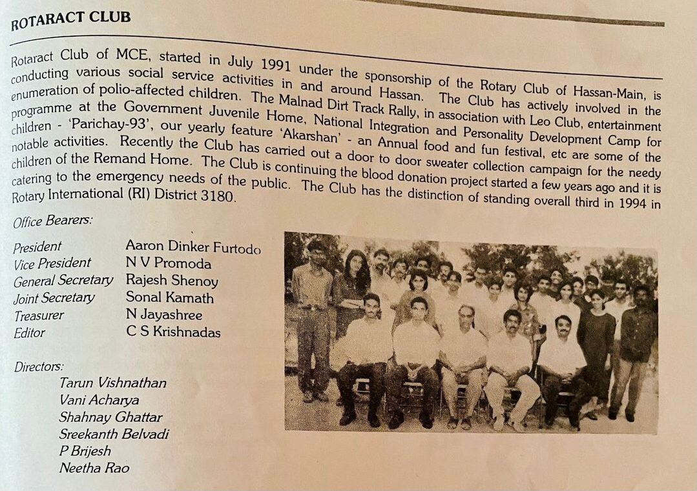

Rotaract Club of MCE, started in July 1991 under the sponsorship of Rotary Club of Hassan, is conducting various social service activities in and around Hassan. Rotaract Club is determined as the testament to passion, leadership and the pursuit of excellence. The club is a part of Rotary's youth service partner for young people aged between 18 and 30. We provide unique opportunities that assist our members in becoming the community, business and professional leaders of tomorrow. It provides young people with the knowledge and skills that will assist them in their personal development and address the physical and social needs of their communities. The Rotaract Club's passion for service and excellence is driven by Rotary International's vision of "service above self". Thus, the club commits itself to society and following the motto of Rotaract: fellowship through service, it enables the Rotaractors to make lifelong friends and to give back to the community they live in.
